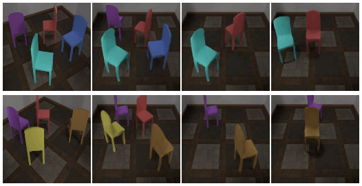

Publications
-
BIND: Binding 3D Robot Actions to 2D Image Features
-
Fiducial Exoskeletons: Image-Centric Robot State Estimation
-
SIRE: SE(3) Intrinsic Rigidity Embeddings
-
FlowMap: High-Quality Camera Poses, Intrinsics, and Depth via Gradient Descent
-
FlowCam: Training Generalizable 3D Radiance Fields without Camera Poses via Pixel-Aligned Scene Flow
-

Unsupervised Discovery and Composition of Object Light Fields